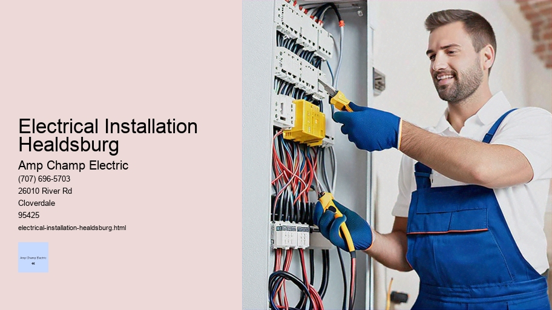

News
Electrical Installation Healdsburg
Electrical Installation Healdsburg
Electrical Installation Santa Rosa
Electrical Installation Cloverdale
Electrical Installation Geyserville
Electrical Installation Windsor
Maintenance and Repair Services Healdsburg
Maintenance and Repair Services Healdsburg
Maintenance and Repair Services Santa Rosa
Maintenance and Repair Services Cloverdale
Maintenance and Repair Services Geyserville
Maintenance and Repair Services Windsor
Electrical Safety Inspections Healdsburg
Electrical Safety Inspections Healdsburg
Electrical Safety Inspections Santa Rosa
Electrical Safety Inspections Cloverdale
Electrical Safety Inspections Geyserville
Electrical Safety Inspections Windsor
Energy Efficiency Upgrades Healdsburg
Energy Efficiency Upgrades Healdsburg
Energy Efficiency Upgrades Santa Rosa
Energy Efficiency Upgrades Cloverdale
Energy Efficiency Upgrades Geyserville
Energy Efficiency Upgrades Windsor
Specialty Electrical Services Healdsburg
Specialty Electrical Services Healdsburg
Specialty Electrical Services Santa Rosa
Specialty Electrical Services Cloverdale
Specialty Electrical Services Geyserville
Specialty Electrical Services Windsor
About Us
Contact Us

Electrical Installation Healdsburg
Dimmer Switch Installation
Electrical Installation: The Heart of Modern Living
In the tapestry of modern civilization, electrical installations are akin to the intricate network of veins and arteries that sustain a living organism. From the humble abodes that dot suburban landscapes to the towering skyscrapers that define city skylines, electrical systems form an invisible backbone, enabling a plethora of devices and amenities that we often take for granted.
Understanding Electrical Installation
At its core, electrical installation involves the meticulous process of connecting various electrical components to create a functional and safe system capable of distributing and utilizing electric power. This encompasses an array of activities including planning, laying out circuits, installing conduits, wiring outlets, fitting switches, and integrating appliances into an operable network.
The Planning Phase
Before any actual installation work begins, a period of extensive planning is paramount. During this phase, skilled professionals such as electricians and engineers collaborate to design a blueprint tailored to meet both the present and future needs of the structure in question. They consider factors like load calculations to ensure sufficient power supply without risking overload, placement for convenience and accessibility, adherence to local building codes, energy efficiency considerations, and provisions for safety mechanisms like circuit breakers.
Electrical Injuries
Installation Process
Once plans are set in stone—or rather on paper—the real work begins. Electricians lay down conduits or trunking systems which act as protective housing for wires; these pathways must be strategically placed to avoid interference with other structural elements while also allowing for ease of maintenance. Wiring follows suit; it's an artful balance between precision (to prevent faults) and pragmatism (ensuring usability).
New Technologies in Electrical Installations
As technology evolves at a blistering pace so too does electrical installation practices. Smart homes equipped with Internet-of-Things (IoT) devices require not just standard wiring but also connectivity solutions such as Ethernet cables or wireless protocols. Solar panels necessitate inverters and battery storage systems; electric vehicle charging stations demand high-capacity circuits.
Safety Considerations
Electricity is unforgiving—missteps can lead to dire consequences including fires or electrocution. Therefore safety is not just an afterthought but interwoven throughout every stage of electrical installation. High-quality materials must be used; grounding systems installed to mitigate shock risks; GFCI (Ground Fault Circuit Interrupter) outlets incorporated especially in areas prone to moisture—all underpinned by thorough testing upon completion before any system goes live.
Training and Qualifications
Given its complexity and potential hazards associated with electricity skilled practitioners undergo rigorous training programs followed by certification exams ensuring they possess both theoretical knowledge as well as practical expertise necessary for executing installations safely competently.
Impact on Daily Life
It’s easy overlook how integral electrical installations are until there’s an interruption—be it from power cut or malfunctioning outlet suddenly world grinds halt reminding us reliance upon invisible force coursing through walls ceilings appliances ignite engines industry propel digital communications charge gadgets illuminate darkness provide warmth coolness satisfy myriad human needs desires essence lifeblood our daily existence testament ingenuity resourcefulness humankind harness control one nature's most powerful phenomena benefit society large.Globalization means best practices techniques shared across borders fostering safer more efficient methods worldwide community striving better brighter tomorrow all thanks comprehensive carefully executed electrical installations today.Future holds promise further advancements smart grids wireless energy transfer who knows maybe even quantum computing—all predicated solid foundation laid those who work tirelessly behind scenes connect wire transform spaces homes businesses institutions hubs activity progress innovation thus story ongoing marvel wonder ever-present vital element contemporary life: electricity dance electrons choreographed hands unseen maestros conducting symphony illuminates world around us.
Title: The Essentials of Residential Wiring and Socket Installation
Residential wiring and socket installation are critical components of modern living, ensuring that we have safe, reliable access to electricity for lighting, appliances, and electronic devices. This essay delves into the intricacies of these essential services, shedding light on their significance, the processes involved, safety considerations, codes and regulations that govern them, as well as some do-it-yourself tips for enthusiasts.
Understanding the Significance:
Electricity is the lifeblood of contemporary homes. It powers everything from our kitchen appliances to our entertainment systems. Proper wiring and socket installation are paramount not only for functionality but also for safety. Faulty electrical installations can lead to fires or electrocution, making it one of the most critical aspects of residential construction and maintenance.
The Process – From Planning to Execution:
The process begins with planning. A professional electrician will assess the needs based on factors such as room usage, appliance requirements, and homeowner preferences. The layout must accommodate current needs while also allowing for future expansion or changes in technology.
Once a plan is in place, installation begins with installing conduits or cables within walls which will carry wires throughout the home. This involves cutting channels into wall surfaces or threading wires through pre-installed conduits in new constructions.
Next comes the actual wiring phase where different types of wires are pulled through these conduits connecting switches, sockets and fixtures to the main distribution panel which connects to the outside power source.
Installing sockets involves cutting out precise areas in walls where outlets will be located before securing outlet boxes into these spaces. Wires are then connected to these boxes; hot (live), neutral, and grounding wires must be correctly installed to ensure proper functioning and safety.
Safety Considerations:
Safety is paramount when dealing with electricity. Professional electricians follow strict guidelines including turning off power at the main breaker during any installation or repair work; testing connections before turning power back on; using insulated tools; wearing rubber-soled shoes; ensuring all equipment meets national safety standards; keeping a fire extinguisher handy just in case an electrical fire starts during work.
Codes & Regulations:
Carbon Monoxide Detector Installation
Electrical installations are governed by local building codes which may vary slightly but generally adhere to national standards such as National Electrical Code (NEC) in the United States or IEE Wiring Regulations in UK. Professionals must remain up-to-date with these constantly evolving standards designed around protecting people's property from electrical hazards.
DIY Tips:
While many aspects of residential wiring require a licensed electrician due to complexity & danger involved there’s still room for DIY enthusiasts looking forward towards adding extra sockets or replacing existing ones provided they have basic understanding about how their home’s electrical system works & follow necessary precautions like shutting down relevant circuits at distribution panel before starting any work.
Remember though if you’re not confident about your ability it’s always safer & wiser hiring a qualified professional rather than risking injury or damage via incorrect installations!
In conclusion residential wiring & socket installation form backbone infrastructure enabling us harnessing benefits offered by electricity within our homes efficiently safely without compromising comfort convenience provided we respect rules laid out designed protect us against potential dangers lurking behind seemingly benign switch plates outlet covers!
electrical-installation-healdsburg.html
electrical-installation-santa-rosa.html
electrical-installation-cloverdale.html
electrical-installation-geyserville.html
electrical-installation-windsor.html
maintenance-and-repair-services-healdsburg.html
maintenance-and-repair-services-santa-rosa.html
maintenance-and-repair-services-cloverdale.html
maintenance-and-repair-services-geyserville.html
maintenance-and-repair-services-windsor.html
electrical-safety-inspections-healdsburg.html
electrical-safety-inspections-santa-rosa.html
electrical-safety-inspections-cloverdale.html
electrical-safety-inspections-geyserville.html
electrical-safety-inspections-windsor.html
energy-efficiency-upgrades-healdsburg.html
energy-efficiency-upgrades-santa-rosa.html
energy-efficiency-upgrades-cloverdale.html
energy-efficiency-upgrades-geyserville.html
energy-efficiency-upgrades-windsor.html
specialty-electrical-services-healdsburg.html
specialty-electrical-services-santa-rosa.html
specialty-electrical-services-cloverdale.html
specialty-electrical-services-geyserville.html
specialty-electrical-services-windsor.html
privacy-policy.html
sitemap.html
sitemap.xml
about-us.html
feed.xml
Commercial building electrical layout design
Title: Navigating the Complexities of Commercial Building Electrical Layout Design
Commercial building electrical layout design is a critical aspect of architectural engineering that requires meticulous planning, profound knowledge of electrical systems, and a deep understanding of safety standards. It is an interdisciplinary task that demands coordination between architects, electrical engineers, contractors, and sometimes even interior designers to ensure the seamless integration of electrical components within a building's structure. In this essay, we will delve into the nuances of designing an efficient and safe electrical layout for commercial structures.
Firstly, it is essential to grasp the importance of an electrical layout in commercial buildings. Unlike residential structures where simplicity might suffice, commercial buildings often house complex systems such as HVAC (heating, ventilation, and air conditioning), elevators, security systems, data centers, and extensive lighting arrangements. An effective design must cater to these needs while also being adaptable for future expansions or technological upgrades.
The initial step in designing a commercial building's electrical layout entails thorough planning and understanding the purpose of the building. Whether it's an office space requiring numerous workstations with reliable power outlets or a shopping mall with large display lighting requirements and escalator circuits – each purpose dictates distinct design considerations.
After establishing the intent of use for the building, load calculations are performed to determine how much electricity is required for both standard operations and peak usage times. This involves detailed analysis on equipment wattages, operating hours, potential growth estimates as well as emergency power needs – all crucial in deciding upon service panel capacities and transformer sizing.
Safety regulations play a pivotal role throughout this process. Compliance with local codes such as NEC (National Electrical Code) in the United States ensures that designs consider proper circuit breakers sizes to prevent overloads; adequate spacing for outlets to avoid potential fire hazards; correct grounding methods; installation heights for switches; accessibility for individuals with disabilities; emergency egress lighting; among other stipulations aimed at mitigating risks associated with electricity.
Once these fundamental parameters are established comes the task of creating schematic diagrams illustrating how various components connect within different areas of the building. These schematics serve as blueprints which detail circuit locations including switchboards panels; distribution boards; light fixtures placement along with their control switches; outlet positions for appliances or equipment requiring plug-in power sources; cabling routes through conduits ensuring protection against environmental factors like moisture or heat.
Another key element when designing layouts is energy efficiency which has become increasingly important due to environmental concerns and cost-saving initiatives.
Timer Switches
Implementing LED lights instead traditional incandescent bulbs could significantly reduce energy consumption while using automated control systems can optimize usage patterns based on occupancy sensors reducing unnecessary waste during off-hours or low-traffic periods within spaces like hallways conference rooms.
Electrical Industry Regulations
The complexity continues when integrating modern technology requirements such as high-speed internet connections fiber optics networks telecommunications lines necessary today’s digital age all needing consideration during initial phases avoiding costly retrofits later stages construction process.
Moreover project management skills come into play coordinating between various tradespeople involved from electricians running wires plumbers installing piping alongside them maintaining clear communication avoid cross-disciplinary conflicts ensuring harmonious workflow adherence timelines budgetary constraints something seasoned professionals adept handling through experience expertise honed over years practice field work.
In conclusion crafting successful commercial building electrical layout designs encompasses far more than just stringing together wires hanging light fixtures—it’s about envisioning operational flow considering user experience prioritizing safety focusing sustainability responding adaptively ever-changing technological landscape ultimately delivering functional aesthetically pleasing environment those who inhabit utilize space day-to-day basis. With careful attention detail partnered collaborative effort across disciplines result nothing short foundational backbone powering modern commerce industry worldwide.
Electrical Installation Santa Rosa
Lighting fixture installation
Lighting Fixture Installation: Illuminating the Art of Brightening Spaces
The art of lighting fixture installation transcends mere functionality; it is a confluence of aesthetics, design, and technology that transforms spaces into experiences. This essay delves into the intricacies of lighting fixture installation, a process that not only illuminates our surroundings but also shapes the way we perceive and interact with them.
To begin with, lighting fixture installation is an essential component in both residential and commercial settings.
Dimmer Switch Installation
It ensures that activities can be carried out comfortably and safely while enhancing the mood and ambiance of any space. The process involves several steps that require attention to detail and an understanding of electrical systems.
The first step in lighting fixture installation is planning. A well-thought-out plan considers the purpose of the space, the activities performed there, and the atmosphere one wishes to create. For example, a kitchen may need bright task lighting for food preparation areas while softer ambient light might be desired in a dining room to foster a warm and inviting environment for meals and gatherings.
Once the planning phase is completed, selecting appropriate fixtures comes next. Lighting fixtures come in myriad styles, sizes, materials, colors, and brightness levels (measured in lumens). From sleek LED panels to ornate chandeliers or practical recessed lights – each type serves different needs and contributes uniquely to a room’s character.
After selection comes the actual installation process. Safety is paramount when dealing with electrical components; hence this task should typically be entrusted to licensed professionals. The installer must ensure that power sources are turned off before commencing work to avoid electrical shocks or accidents. They will then mount the chosen fixtures securely using anchors or braces as needed for support—especially important for heavy installations like large pendant lights or ceiling fans.
Wiring is another critical aspect during installation—a complex task involving connecting wires correctly according to color codes (black or red for live wire, white for neutral wire, green or bare copper for ground) so that electricity flows safely through the circuit without risk of short-circuiting or overloading.
With wiring complete and fixtures mounted securely onto ceilings or walls as required by their design specifications—testing follows next before restoring power supply back on circuit breakers/fuse boxes checking whether newly installed lights function properly without any flickering issues indicating potential problems within connections made earlier stage which would necessitate troubleshooting rectify such discrepancies ensuring smooth operation post-installation.
The final touch involves adjusting angles beam direction especially relevant adjustable spotlights track systems allowing users direct focus areas requiring more concentrated levels illumination highlighting artworks display shelves architectural features otherwise accentuating specific zones within overall layout premises under consideration thereby completing full spectrum offerings provided through comprehensive approach towards effective efficient implementation strategies surrounding enlightening world around us via medium well-executed engineered solutions realm modern-day fitting installations.
In conclusion, installing light fixtures isn’t just about placing objects from point A B fixing them place—it's crafting visual narrative plays out across canvases our homes businesses transforming mere rooms havens inspiration productivity comfort depending upon intentions behind said endeavors undertaken outset journey towards brighter futures lit up courtesy advancements human ingenuity creativity continuing push boundaries what's possible realm interior exterior designs alike all thanks humble yet profoundly impactful process known simply as 'lighting fixture installation'.
Electrical panel and circuit breaker setup
An electrical panel, also commonly referred to as a breaker panel, service panel, or distribution board, is a critical component in any residential or commercial building's electrical system. This centralized hub is where the electricity from the utility company enters a home or business and gets distributed throughout the premises via individual circuits.
Electrical Installation Healdsburg - Dimmer Switch Installation
Carbon Monoxide Detector Installation
Voice, Data, and Video Wiring
Electrical Panel Upgrade
Timer Switches
Electrical Troubleshooting
Lighting Design and Installation
Power Quality Analysis
Each circuit is protected by its own circuit breaker, designed to safeguard against the dangers of overcurrents and short circuits.
The heart of an electrical panel is its array of circuit breakers. These switches control and protect the integrity of the wiring within each circuit. When properly configured, they ensure that appliances and devices operate safely by preventing electrical overload—a condition that can cause wire heating and potentially lead to fires.
Understanding how an electrical panel works begins with recognizing its main parts.
Electrical Panel Upgrade
The most visible elements are the rows of switches—these are the individual breakers. Each switch corresponds to a specific zone or area in your property or powers particular appliances. Typically, large appliances such as air conditioners, dryers, and ovens have dedicated single-pole (for 120 volts) or double-pole (for 240 volts) breakers due to their higher power requirements.
At first glance, an electrical panel may seem intimidating with all its components; however, it has a straightforward operation principle.
Voice, Data, and Video Wiring
Power enters through two wires—a hot wire for each phase if you have a typical split-phase 240V service common in North America—and one neutral wire connected directly back to the transformer providing power. The metal strip connects it all together at what’s known as the bus bar.
Each circuit breaker clamps onto this bus bar in a way that allows it to act as both a conductor when closed and as an interrupter when open—in response to excess current flow. In simple terms, if too much electricity tries to pass through any given circuit — more than what's safe for that gauge of wire —the corresponding breaker will "trip," automatically severing that connection until someone manually resets it.
This protective function cannot be overstated: without these automatic shut-offs provided by breakers or fuses in older systems), every incidence of excess current could result in damaged equipment or even catastrophic fires due to overheated wires.
Installation and setup of an electrical panel must adhere strictly to local building codes and regulations which typically follow guidelines set out by national standards organizations like NEC (National Electrical Code) in the United States. This ensures not only efficiency but more importantly safety for those who occupy buildings equipped with these systems.
It's pertinent for homeowners not just to understand their electrical panels but also respect them—routine inspections should be conducted by licensed electricians who can identify potential issues such as loose connections or signs of wear on breakers which might compromise safety.
In conclusion, while often overlooked once installed behind its gray metal door tucked away in some corner - usually basements or utility closets - an electrical panel stands guard at all times ready to react within milliseconds should there ever be any threat posed by our increasing demand for energy consumption within our homes and workplaces. It epitomizes silent vigilance; playing guardian over our modern lifestyles powered so prevalently by electricity.
Grounding systems and safety measures
Grounding systems and safety measures are essential components of any electrical network, providing protection against electric shock, safeguarding equipment from damage, and enhancing the overall reliability of electrical installations. The implementation of effective grounding and strict adherence to safety protocols are vital for minimizing the risk of accidents and ensuring a safe environment for both people and machinery.
The core purpose of a grounding system is to provide a reference point for electrical circuits by connecting them directly to the ground. This helps stabilize voltage levels throughout the electrical system. Grounding also plays a crucial role in protecting individuals from electrical hazards. It does so by providing a low-resistance path for fault currents, which may occur due to insulation failure or other faults within an electrical system, safely directing these potentially dangerous currents into the earth.
There are several types of grounding systems used in various applications, such as:
1. **Service Grounding:** This involves connecting the neutral point of an electrical supply system to the earth at the service equipment location.
2. **Equipment Grounding:** This ensures that non-current-carrying metallic parts of equipment are connected to the ground so that they do not reach hazardous voltage levels if insulation fails.
3. **System Grounding:** Employed in power distribution networks, this involves connecting one point of a circuit or system to the ground.
In addition to these systems, there is also specialized grounding like lightning protection where air terminals (lightning rods), conductors, and ground electrodes work together to provide a path for lightning discharges into the earth without damaging structures.
Safety measures encompass a broad spectrum ranging from personal protective equipment (PPE) such as rubber gloves and insulating mats designed for working with electricity, to stringent regulations around installation standards like those found in codes issued by institutions such as National Fire Protection Association's NFPA 70E standard or international equivalents.
Some key safety measures include:
- **Regular Inspections:** Regular checking and maintenance ensure that all components meet safety standards and function correctly.
- **Proper Training:** Individuals working with or near electrical systems should be properly trained in safe operating procedures.
- **Lockout/Tagout Procedures:** These procedures ensure that machines are properly shut down and cannot be started up again before maintenance or repair work is completed.
- **Circuit Breakers and Fuses:** These devices protect an electrical circuit from damage caused by overcurrents by interrupting power flow when unsafe conditions occur.
- **Emergency Planning:** Predefined emergency response plans help mitigate risks during unexpected events involving electricity.
Electrical Installation Healdsburg - Timer Switches
Electrical Remodeling
Carbon Monoxide Detector Installation
Voice, Data, and Video Wiring
Electrical Panel Upgrade
Timer Switches
Electrical Troubleshooting
It is critical that professionals designing and implementing grounding systems possess thorough knowledge about local regulations since these can vary greatly depending on geographic location and type of installation involved. Compliance with national codes like NEC (National Electrical Code) in the United States ensures installations meet minimum requirements for safety.
Furthermore, understanding soil resistivity—the measure of how much soil resists electric current flow—is important when designing earthing systems because it influences decisions regarding electrode material choice along with depth and layout patterns necessary for adequate performance under fault conditions.
In conclusion, grounding systems serve as an indispensable part of modern electrotechnical practices delivering functionality alongside preventive mechanisms against potential harm arising from electric power use. When paired with comprehensive safety measures spanning training through execution phases coupled with diligent observance toward regulatory compliance, they form formidable defenses securing human lives while preserving operational integrity across myriad industries reliant upon electricity daily functioning.
About
About Healdsburg
Check our other pages :
Energy Efficiency Upgrades Cloverdale
Maintenance and Repair Services Windsor
Electrical Safety Inspections Santa Rosa
Electrical Installation Geyserville
Electrical Safety Inspections Healdsburg
Frequently Asked Questions
What types of electrical installation services are available in Healdsburg?
In Healdsburg, you can find a range of electrical installation services including residential and commercial wiring, lighting installations, panel upgrades, EV charger installations, smart home automation systems, generator setups, and renewable energy system integrations such as solar panels.
How do I choose a reliable electrician for my electrical installation needs in Healdsburg?
To choose a reliable electrician in Healdsburg, ensure they are licensed and insured for your protection. Look for electricians with good reviews and testimonials from previous customers. Verify that they have experience with the specific type of work you need and ask for references if available.
Are there any local codes or regulations in Healdsburg that I should be aware of before starting an electrical installation project?
Yes, Healdsburg has specific building codes and regulations that govern electrical installations to ensure safety and compliance. Its important to hire an electrician who is familiar with these local requirements. They will obtain the necessary permits and ensure that all work meets the current National Electrical Code (NEC) standards as well as local amendments.
What is the process for obtaining permits for electrical work in Healdsburg?
Permits are typically required for most types of significant electrical work. Your electrician should handle the permit application process on your behalf. This involves submitting detailed plans to the local building department in Healdsburg, paying any applicable fees, and scheduling inspections to ensure compliance with all relevant codes.
Can electricians in Healdsburg install energy-efficient systems or advise on reducing electricity consumption?
Yes, many electricians in Healdsburg can install energy-efficient systems like LED lighting solutions, programmable thermostats, and solar panels. They can also perform energy audits and provide recommendations on reducing electricity consumption through various upgrades or changes in usage patterns to make your home or business more energy-efficient.
Electrical Installation Healdsburg